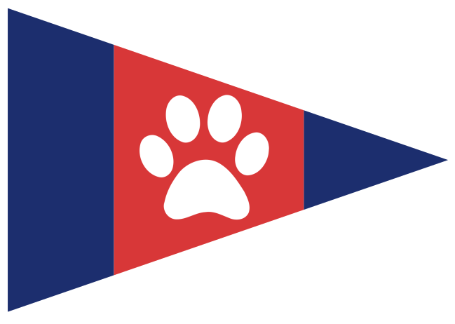

Salty Critter
Yacht Club
Course records
Pick your character
Controls
Steering & sails
Steer◀ ▶ A / D
Fine steeringSHIFT + steer
Sheet in / out▼ ▲ S / W
SpinnakerSPACE
Trim modeTAB
View & system
Camera modeC
Nav aidsN
Sailing rulesP
Mute / musicM SHIFT+M
ScreenshotF12
SettingsF2
Controls?
PauseESC
Developer: Debug info F8 · Game speed [ / ]
Paused
Abandon race?
Settings
Sound
Music
Sound effects
Background effects
Sailing aids
Sailing rules
Navigational aids
Auto trim
Camera & instruments
Camera mode
Instruments
Telltale color
Salty Critter Yacht Club
FAIR WINDS · SALTY RIVALS
● The Fleet
Race Results
Your Splits
Pos
Skipper
Gap to winner
Time
Delta
Start
Top Spd
Avg
Dist km
Pen
Pts
01:00
▲
OCS — RETURN BEHIND THE LINE
N
S
W
E
0.0
SOG
0.0
VMG
10
TWA
0
⚠ OVERPOWERED
Water Tuner F8 to Toggle
Notification